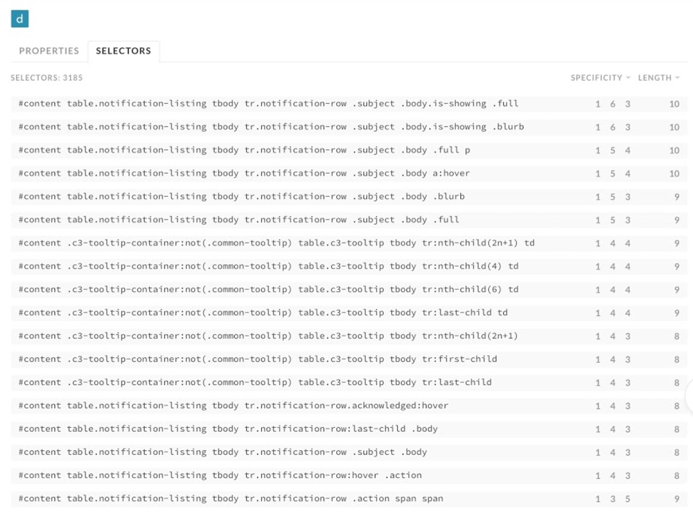
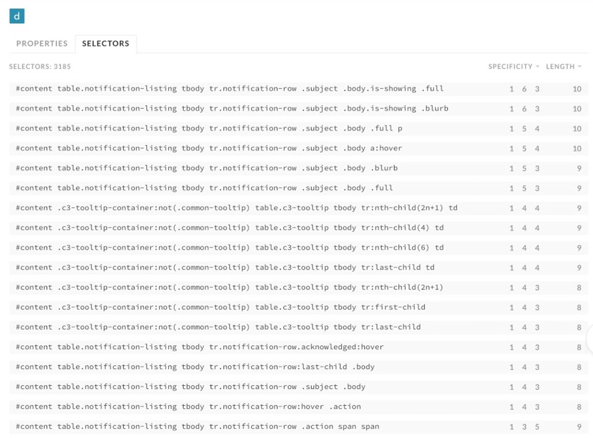
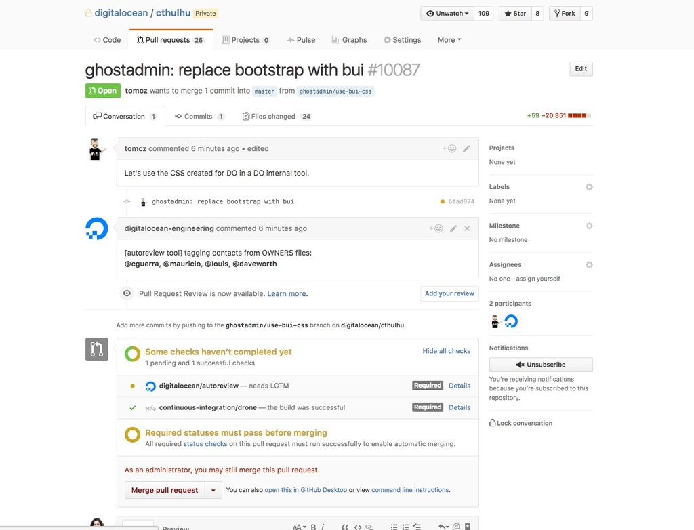
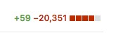

Why Design Systems Fail
An Event Apart | Boston 2018
Una Kravets | @una
A Little Bit About Me
-- image of design systems to hot right now --
A Design System Is:
- Style guide or visual pattern library
- Design tooling (i.e. Sketch Library)
- Component library (where the components live in code)
- Code usage guidelines and documentation
- Design usage documentation
- Voice and tone guideline
- Animation language guideline

Buoy v1
Float
BUI v2
 

Happy Design Systems:
- Scale Good Standards
- Build-in Accessibility
- Unify Component Style
- Unify Component Code
- Reduce Code Cruft
- Speed Up Product Delivery
1. Investment
To have a successful design system, you need to make a continuous effort to invest resources into it.
2. Communication
- Ask.
- Listen.
- Make Your User Feel Heard.
3. Buy-in
Hackathons are Candy to a Budding Design System


4. Solid Architecture
Semantic Versioning
Major.Minor.Patch
5. Reduce Friction
If it's harder for people to use than their current system, people won't use it
"Empowering product growth with design systems"
- Investment
- Communication
- Buy-In
- Solid Architecture
- Remove Friction